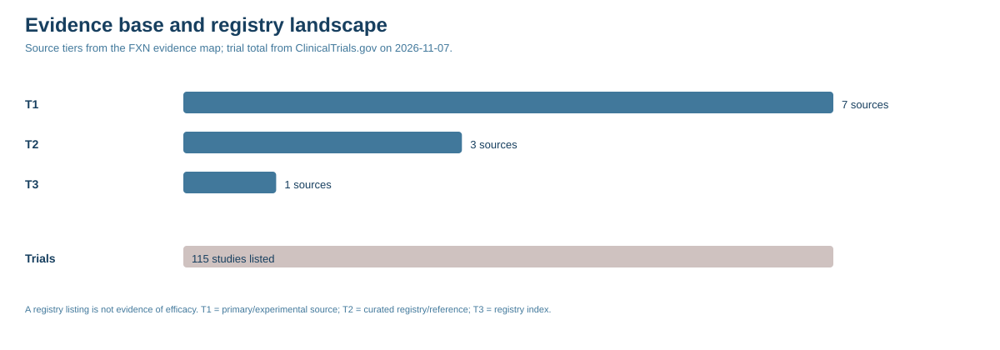
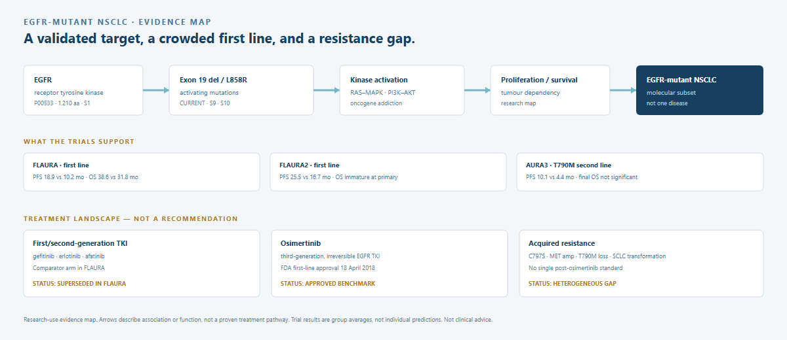

What should happen next?
A recommendation, a confidence statement, the falsifiers and the next actions — before the evidence.
One factual picture
Disease, gene, mechanism, modality, trial and regulatory status on a single page. Arrows describe document structure, not proven therapy.
Every claim carries its state
CURRENT, STALE, CONFLICT, UNVERIFIED or BLOCKED — with source IDs, confidence and the last checked date.
The case against the answer
The strongest counterarguments, the negative evidence and the experiment that would change the decision.
Versioned, not frozen
A changelog, a watchlist and a monthly digest. The dossier ages in public rather than going stale in silence.
Ask the dossier
A client-only room that answers only from the checked content, cites its sources and says “not in this dossier” when it cannot. Access is arranged directly, not through the public site.
One evidence base, four outputs
A partner brief, a grant annex, a plain-language summary and a board page — all cut from the same claims and sources.
19 sources. 10 claims. One unverified prevalence.
A full decision dossier with construct provenance and an access timeline that separates approval from routine availability.

49 pages. 30 sources. 25 claims.
Target biology, mutation landscape, FLAURA / FLAURA2 / AURA3 evidence, resistance taxonomy, structural provenance and a 25-claim ledger. The public release carries the summary and selected sources; the full dossier is access-controlled.

52 pages. 30 sources. 25 claims.
Dystrophin loss, genotype-specific exon skipping, AAV micro-dystrophin and the cardiac/respiratory limits. The public release carries the summary and selected sources; the full dossier is access-controlled.
49 pages. 31 sources. 25 claims.
SMN1/SMN2 biology, the three approved SMN-restoring routes, presymptomatic treatment and the respiratory/bulbar limits. The public release carries the summary and selected sources; the full dossier is access-controlled.
46 pages. 30 sources. 25 claims.
HbS polymerisation, hydroxyurea and supportive care, transfusion, HSCT and the approved gene therapies, with the organ-risk and access boundaries stated plainly.
10 dossiers. 209 pages. L.O.V.E. status stated.
Ten compact benchmark rebuilds from the October 2026 orphan reports: PH1, Angelman, FNIP1, Lesch-Nyhan, MAPT, Miller-Dieker, AMRF, Myhre, SOD1-ALS and SYNGAP1. Identity and structural constructs were checked; Orphanet and OMIM identifiers and treatment labels were checked. Independent clinical review remains outstanding.
Commission a dossier
Send a target, a disease question or a decision you need to defend. We reply with scope, price, timeline and data-handling terms before any work begins.